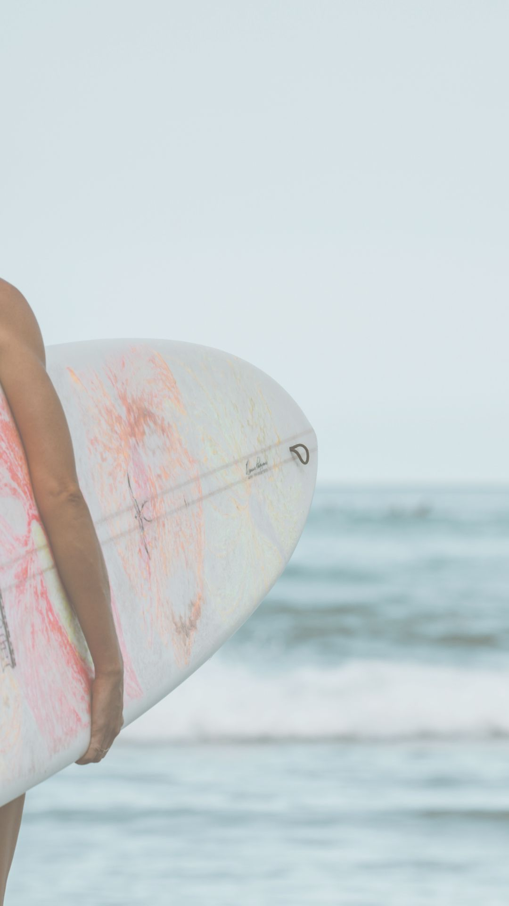

Inicio
Servicios
Galería
Blog
Contacto
WINDSURF CENTER VERACRUZ
Boca del Río, México
Conoce más
RAZONES PARA EMPEZAR EN LOS DEPORTES ACUÁTICOS
Combatirás el extrés.
Mantenerte en forma.
Harás nuevas amistades.
Serás mucho más feliz.
Conectarás con la naturaleza.
Practicarás la paciencia.

Nuestra pasion es el WINDSURF
Sin embargo, no siempre es dan las condiciones para practicarlo y eso nos pone tristes.
¿Que hacer para mitigar la tristeza?
SURF, ¿Te parece bien?
Ó ¿Porqué no? en SUP PADDLE
Realizar un recorrido por nuestros bellos arrecifes e Islas para snorkelear, sumergiendote entre la vida marina.
Tambien es divertido, correr hacia el mar, subirte a la SKIMBOARD y sacar un truco fabuloso.
Y ¿Será posible ir al mar a buscar algo para merendar?
Si, claro. Salir en Kayak ó Sup Paddle a pescar, !Es posible¡
Entonces, nosotros no somos solo windsurfers.
Aunque siempre queremos el viento, si un día no sopla, evitamos la tristeza con otras actividades acuáticas y seguimos felices.
LA CONDICIÓN FÍSICA ES IMPORTANTE
Por eso, hemos diseñado un plan de entrenamiento especial. "El windsurfer bien preparado fisicamente se divierte más".
SURFARIS
Realizamos viajes a diferentes spots, para convivir con colegas y experimentar la vida del lugar.
Algunos windsurfistas que gustan de competir, van de regata en regata, buscando un lugar en la Selección Olimpica Nacional.